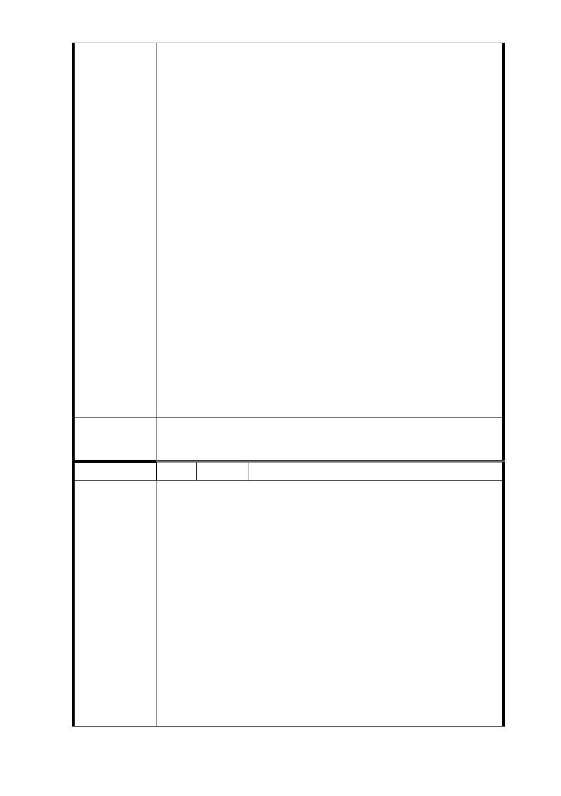

公開甄選，由本府成立評選委員會就投資人申請所提送
之資格能力及開發建議書(開發規模及分配比例等)評選
為最優者為投資人，投資人使用之建材及其設計均需經
本府捷運局審核後方可請照施工。
另開發建物完工移轉至地主前，亦需與地主辦理驗收移
交，而完成移轉予地主後，依投資契約規定亦有其相關
保固規定，故其品質方面應可安心。又施工之工期除應
符合建管法令之規定外，亦納入投資契約書中約定。
12.有關住戶安置，依「臺北市舉辦公共工程拆遷補償自治
條例第 21 條：『舉辦公共工程須拆除合法建築物、舊有
違章建築或既存違章建築之全部時，應對建築物所有權
人以下列方案安置：一、對合於國民住宅條例之承租規
定者，依國民住宅出售出租及商業服務設施暨其他建築
物標售標租辦法規定優先辦理承租國宅。主管機關無法
於拆除建築物前，完成配租作業，供其遷入而須等候者，
按月發給安置房租津貼 新臺幣（以下同）二萬元，不足
一個月以一個月計算。最高安置房租津貼總額不得逾九
十萬元。二、放棄前款承租國民住宅者，發給安置費用
九十萬元。三、主管機關無國民住宅可供配租或建築物
所有權人為非自然人，由主管機關發給安置費用九十萬
元。但拆遷戶為公法人者，不予發給。四、對不合於國
民住宅承租資格者，發給安置費用九十萬元。』」
委 員 會 決 議 同「市府回應意見」。
編 號 4-1 陳情人 曾傳達里長及一鄰住戶（R03 捷三）
1、綜合住戶大多數的意見，住戶的基本要求為原有室內坪
數（含陽台）一坪換一坪並附加一車位，也附合郝市長
所發表的都更政策。
2、若先能確定容積獎勵有多少、又能決定捷運局要取回多
少；那麼住戶所有權人的＂傍惶顧慮＂就會大幅消彌來
支持聯合開發！
陳 情 理 由 3、若捷運局將來無法促成聯合開發，因本社區為四層加強
磚造結構，考慮住戶之居住安全，住戶堅決反對採取部
份徵收方式，處理捷運站出入口問題。
4、如將捷運出入口及必要設施直接設置在人行道上時，請
考慮將來之路型與交通安全之影響。
台北市信義區中坡里里長曾傳達及一鄰住戶共呈
- 76 -